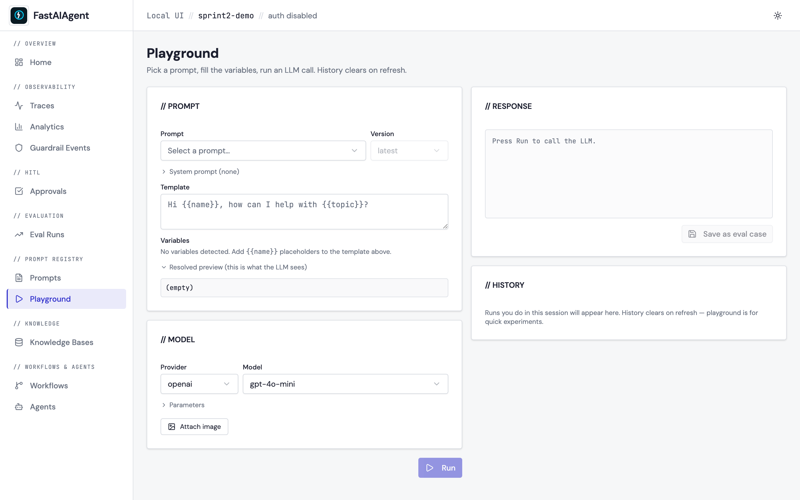
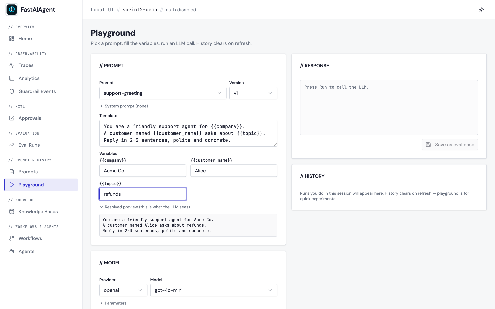

Prompt Playground¶
The Playground is the iteration loop for prompts: pick a prompt from the registry, fill in variables, choose a model, click Run, watch the response stream back. Same SDK code path as production runs — same providers, same cost tracking, same trace pipeline — minus writing a script.
Find it in the sidebar under // PROMPT REGISTRY → Playground, or jump
directly from any prompt detail page via the Test in Playground button.

What it does¶
Two-panel layout. Left: configuration. Right: response.

Configuration (left)
- Prompt + version: dropdowns over your registered prompts. Picking one loads its template into the editor below.
- System prompt: optional collapsible textarea. When set, sent as a system message; when empty, the resolved template is sent on its own.
- Template: editable textarea with
{{variable}}placeholders. Edit it in place for one-off experiments — saving a new version still happens through the Prompt Editor. - Variables: one input field auto-generated per
{{name}}detected in the template. Updates re-render live. - Resolved preview: collapsible read-only block showing the exact final prompt the LLM will see.
-
Provider + model: populated from the
/api/playground/modelsendpoint. Providers without an API key in your environment are disabled with a tooltip telling you which env var to set. The provider list covers every built-in (openai,anthropic,ollama) plus every preset registered withfastaiagent.llm.providers.register_provider(12 ship in the box — Gemini, Groq, OpenRouter, DeepSeek, Together, Fireworks, Perplexity, Mistral, LM Studio, vLLM, SambaNova, Cerebras). See LLM providers for the full table.The model field is a combobox, not a fixed list: pick a suggestion or type any model id the provider accepts. Suggestions are only suggestions —
LLMClienttakes whatever the upstream API knows, so a model released after your SDK version is always reachable. To change the suggestions themselves, see Customising the model list. -
Parameters: temperature, top_p, max_tokens — mapped directly onto
LLMClientconfig.temperature and top_p are off by default and read
autountil you switch them on, which means they are not sent at all and the provider applies its own default. This is deliberate: Anthropic rejectstemperatureandtop_ptogether (400 "cannot both be specified"), and Claude 5 rejectstop_poutright. Turning both on for an Anthropic model will fail — that is the provider's rule, not ours. - Attach image: optional file picker (JPEG/PNG/GIF/WebP). The image is sent as a multimodal content part alongside the text — choose a vision model in the model selector first.

Response (right)
- Streamed response: tokens appear as they arrive via SSE, fed by
LLMClient.astream(). The Run button becomes a Stop button while streaming — clicking it closes the SSE reader and keeps whatever has already arrived. -
Metadata bar: provider/model · latency · input/output tokens · estimated cost · trace link.
Cost is shown as
~$x est.because it is computed from public list prices (compute_cost_usd()). It cannot know about negotiated or committed-use discounts, Amazon Bedrock / Google Vertex partner rates, the Batch API's 50% reduction, or prompt-cache multipliers (cache reads bill at roughly 0.1x, writes at 1.25–2x, and the token counts here don't separate cached from uncached input). Treat it as an order-of-magnitude sanity check. If your organisation has its own rates, set them once — see Customising the model list — and every cost figure in the UI uses them, not just the Playground's. - History: in-memory list of runs from this session. Click a row to reload its template + variables + response. Cleared on refresh. - Save as eval case: appends a JSONL line to./.fastaiagent/datasets/{name}.jsonlso the case is immediately loadable viaDataset.from_jsonl()for guardrail / scorer evals. It appends, so repeated saves build a dataset up; the case also appears straight away in the Datasets page.Run eval on that dataset needs a registered agent
With no agent selected,
run-evalscores each input against an identity function — it echoes the input back, so a case passes only whereexpected_outputequalsinput. On a Playground-saved case that is never true, and you'll see 0%. That is a dataset sanity check, not a model evaluation, and the UI labels the result accordingly.Start the UI with
fastaiagent ui --agent app.py:my_agent(or drive the app yourself withbuild_app(runners=[...])), then passagent_name— the result will reportmode: "agent". You can also run the eval framework directly against the JSONL.
Tracing¶
Every Run emits a playground.run span tagged with
fastaiagent.source = "playground", with the LLM call as a child span.
Open /traces/{trace_id} from the metadata bar to see the full
request/response, token usage, and provider call.
That tag is surfaced on every row of the Traces list as source, and
GET /api/traces?source=playground filters to just experiments — so a
Playground run is distinguishable from production traffic rather than sitting
anonymously in the same list. source is free text: anything stamped on a root
span as fastaiagent.source shows up and filters the same way.
This means playground experiments share the same observability surface as production runs — no separate dashboard.
Endpoints¶
GET /api/playground/models
POST /api/playground/run
POST /api/playground/stream (text/event-stream)
POST /api/playground/save-as-eval
/run is the non-streaming fallback used by tests and any client that
can't read SSE. /stream is what the UI uses by default.
/save-as-eval body shape:
{
"dataset_name": "playground",
"input": "Hi Alice, how can I help with refunds?",
"expected_output": "I'd be happy to help with your refund request…",
"system_prompt": "You are a support agent.",
"model": "gpt-4o-mini",
"provider": "openai"
}
dataset_name is restricted to [A-Za-z0-9_-]+ so the path can't escape
the datasets directory.
Customising the model list¶
Model ids rot on the provider's schedule, not ours — providers decommission them whenever they like, and a list baked into a released wheel can't keep up. Two escape hatches, so you're never blocked:
- Type it. The model field accepts free text. Anything the upstream API knows will run, listed or not. Nothing to configure.
- Change the suggestions with a
models.jsonfile, for when you want your team to see the right list by default.
The file is read from $FASTAIAGENT_MODEL_CATALOG if set, otherwise
.fastaiagent/models.json beside your local.db:
{
"anthropic": {
"models": ["claude-opus-5", "claude-sonnet-5", "claude-haiku-4-5"]
},
"openai": ["gpt-5.2", "gpt-4o-mini"],
"pricing": {
"claude-opus-5": { "input_per_1m": 4.00, "output_per_1m": 20.00 },
"gpt-4o-mini": { "input_per_1m": 0.12, "output_per_1m": 0.48 }
}
}
- A provider's entry may be an object with
models(and optionallyenv_var), or just a bare list of model ids. - Listed providers replace the shipped list; unlisted ones keep theirs.
pricingis a reserved key, not a provider. Keys are model-id prefixes matched longest-first, exactly like the built-in table, and they apply to every cost figure in the UI — traces, analytics, evals, cost breakdown, trace export — not only the Playground. This is how you make the numbers match your actual contract.- Only providers the SDK already knows can be overridden. A brand-new
provider needs a
base_urland wire format, so it goes throughfastaiagent.llm.providers.register_providerinstead. - A malformed file never breaks the picker: it is logged and ignored, and the shipped defaults are used. Same for a single bad entry inside an otherwise-valid file.
Restart the UI after editing, the same as for a new API key.
Presets registered in your own code aren't visible to the UI
fastaiagent ui starts a standalone server that does not import your
project, so a register_provider(...) call in your application code
won't appear in the dropdown. Use models.json (or just type the model
id) to reach it from the Playground.
Models behind an AI gateway¶
Most large orgs don't let apps call OpenAI or Anthropic directly — models sit
behind an internal OpenAI-compatible gateway (LiteLLM, a vLLM proxy, an APIM
front door) on a private URL, reached with a bearer token. The Connection
panel in the // MODEL card covers that:
- Endpoint — overrides the provider's base URL.
http/httpsonly; other schemes are rejected. Leave empty for the provider default. - Token — a credential for this run only.
Pick the custom provider for a plain OpenAI-compatible gateway, type the
model id the gateway exposes, and fill both fields.
The three settings do different jobs, and it's worth being precise:
| Setting | Decides |
|---|---|
| Provider | the wire format — how the request is shaped (OpenAI-compatible, Anthropic Messages, native Gemini) |
| Endpoint | where the request goes |
| Token | what authenticates it at that endpoint |
So provider still matters when you supply an endpoint — it's how the body is
built — but the credential comes from the Token field, not the provider's env
var.
A custom endpoint must bring its own token
Normally the SDK falls back to the provider's env var when no key is
passed. That is right when the endpoint is the provider, and a key-leak
the moment it isn't: with an Endpoint set and the Token box empty, your
real OPENAI_API_KEY would be sent to whatever host you typed — a typo'd
or hostile URL is enough.
The Playground therefore refuses a run that overrides the endpoint without a token whenever a provider key is configured, and tells you which variable was at risk. Enter the endpoint's token, or clear the Endpoint field to call the provider directly. (Where no provider key is configured there is nothing to leak, so a local server on a custom port works with the Token box empty.)
The token is deliberately transient. It is not written to local.db, not
saved to localStorage, not logged (the server logs only provider, model, and
a correlation id), and not echoed in any response — a page reload clears it.
That is the point: gateway tokens are usually short-lived and SSO-issued, so an
env var read once at server start would mean restarting the UI on every
rotation.
It does still travel from your browser to the server in the request body. On
the default loopback bind that never leaves your machine. If you started the UI
with --insecure-bind on a non-loopback host, it crosses the network over
plain HTTP — the panel warns you, and an environment variable is the better
choice there.
For a credential you want to persist, use an env var instead, and point the
provider at a different variable name with env_var in
models.json if the default doesn't suit.
Local servers need no token
ollama, lmstudio and vllm are never key-gated — you run them, so
there is usually nothing to authenticate against. (Before 1.53.0 LM Studio
and vLLM were shown as disabled unless you invented a dummy
LMSTUDIO_API_KEY / VLLM_API_KEY.) Point Endpoint at the right host
and port if yours isn't on the default.
API key handling¶
API keys are never entered in the UI. The Playground reads them from your
environment (OPENAI_API_KEY, ANTHROPIC_API_KEY) the same way every
other SDK call does. The provider dropdown disables options with no key
configured and tells you which variable to set.
When a provider call fails, the UI shows a generic LLM call failed.
rather than the provider's own error — those can carry request ids, account
ids, and partial key prefixes. The full text is written to the server
log under the correlation id shown beneath the error, so grep the terminal
running fastaiagent ui for that id to see what actually went wrong.
When to use which¶
| Scenario | Use |
|---|---|
| Tweak a prompt, see immediate effect | Playground |
| Compare two prompts on a dataset | Eval Runs |
| Debug a specific failed trace | Trace detail / Replay |
| Try a vision model with one image | Playground (attach image) |
| Stress-test guardrails on many inputs | Custom script + eval framework |
The Playground is for the inner loop. The eval framework is for the outer loop.